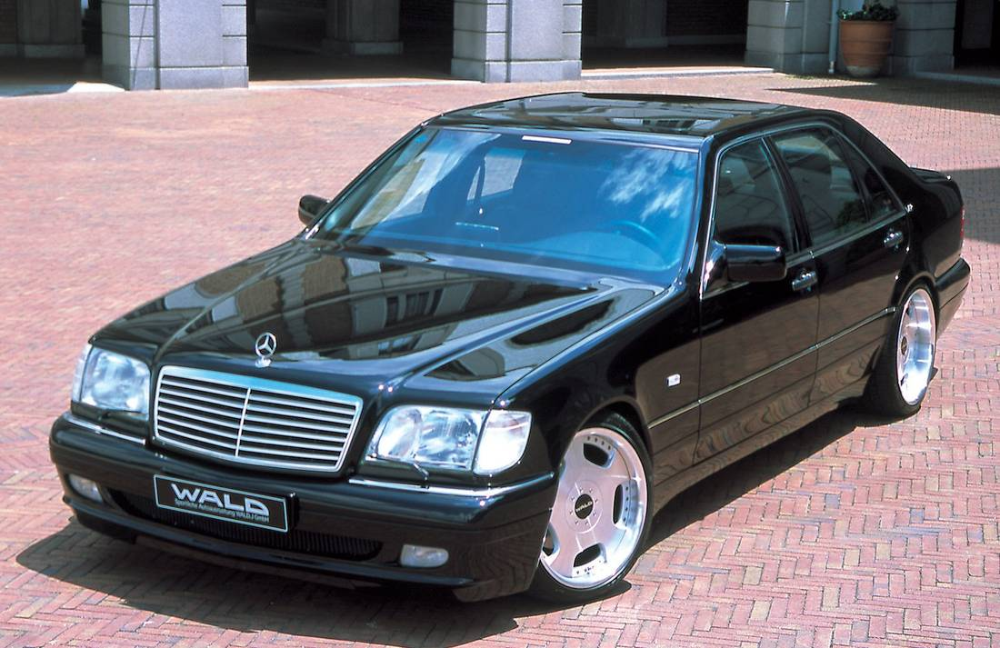
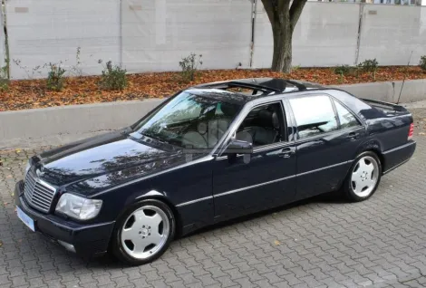
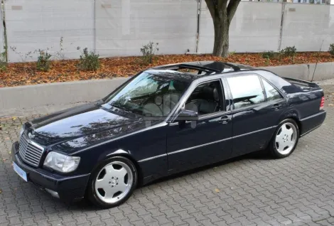

Mercedes Benz W140
Gamoshvebis Weli 1991
Dizel
Mercedes-Benz (გერმანული გამოთქმა: [mɛʁˌtseːdəs ˈbɛnts, -dɛs -] ⓘ),[6][7] საყოველთაოდ მოხსენიებული როგორც Mercedes და ზოგჯერ როგორც Benz, არის გერმანული ძვირადღირებული და კომერციული ავტომობილების ბრენდი, რომელიც დაარსდა 1926 წელს. Mercedes-Benz. AG (მერსედეს-ბენცის ჯგუფის შვილობილი კომპანია დაარსდა 2019 წელს) სათაო ოფისია შტუტგარტში, ბადენ-ვიურტემბერგში, გერმანია.[1] Mercedes-Benz AG აწარმოებს სამომხმარებლო ძვირადღირებულ მანქანებს და მსუბუქ კომერციულ მანქანებს, რომლებსაც Mercedes-Benz-ის სახელი აქვთ. 2019 წლის ნოემბრიდან მოყოლებული, Mercedes-Benz-ის ნიშნებით მძიმე კომერციულ მანქანებს (სატვირთოები და ავტობუსები) მართავს Daimler Truck, Mercedes-Benz ჯგუფის ყოფილი ნაწილი, რომელიც დამოუკიდებელ კომპანიად გადაიქცა 2021 წლის ბოლოს. 2018 წელს Mercedes-Benz იყო. პრემიუმ ავტომობილების უდიდესი ბრენდი მსოფლიოში, რომელმაც გაყიდა 2,31 მილიონი სამგზავრო მანქანა.[8]
ბრენდის წარმოშობა მდგომარეობს Daimler-Motoren-Gesellschaft-ის 1901 წლის მერსედესში და კარლ ბენცის 1886 წლის Benz Patent-Motorwagen-ში, რომელიც ფართოდ განიხილება, როგორც პირველი შიდაწვის ძრავა თვითმავალი ავტომობილისთვის. ბრენდის სლოგანია „საუკეთესო ან არაფერი“.[9]

 
